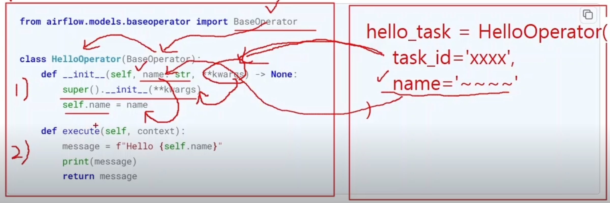

More Operators
DAG Creation, Bash Operator, Task Performance Subject,
Engineering
template
Author
Kwangmin Kim
Published
May 1, 2023
more oeprators-airflow operators ## Provider Operator
airflow web service >> Admin >> Providers 에서 확인할 수 있음
solution 제공 업체에서 본인들의 solution을 잘 다루게 하기 위해 만든 airflow에 제공한 operator
솔루션 제공 업체: AWS, GCP, MS Azure 등
예를 들어, airflow web service >> Admin >> Providers >> apache-airflow-providers-amazon >> Python API >> [airflow.providers.amazon.aws.hooks, airflow.providers.amazon.aws.operators]
참고로 airflow는 GCP와 궁합이 잘맞음
- 의존 관계 : dag간 선 후행 관계
- DAG 의존관계 설정 방법
- TriggerDagRun Operator
- task를 만들 때 task내에 dag_id를 명시하는 parameter가 있음
- task1: PythonOperator 등
- task2,3,4: TriggerDagRun 오퍼레이터로 다른 DAG 을 실행시키는 오퍼레이터
- ExternalTask Sensor
- sensor를 통해 task를 만들기 때문에 여기서 sensor는 task를 의미함
- sensor를 만들 때도 감지해야할 dag_id를 명시해줘야함 (task_id도 명시 가능)
- ExternalTask Sensor는 다른 여러 DAGs의 Task의 완료를 기다리는 센서
- DAG간 의존관계 설정
- 방식
- TriggerDagRun Operator: 실행할 다른 DAG 의 ID 를 지정하여 수행
- ExternalTask 센서: 본 Task 가 수행되기 전 다른 DAG 의 완료를 기다린 후 수행
- 권고 사용 시점
- TriggerDagRun Operator: Trigger 되는 DAG 의 선행 DAG 이 하나만 있을 경우
- ExternalTask 센서: Trigger 되는 DAG 의 선행 DAG 이 2 개 이상인 경우
- 방식
- run_id: DAG의 수행 방식과 시간을 유일하게 식별해주는 키
- 같은 시간이라 해도 수행 방식 (Schedule, manual, Backfill) 에 따라 키가 달라짐
- 스케쥴: 스케줄에 의해 실행된 경우 scheduled__{{data_interval_start}} 값을 가짐
- manual: airflow ui web에서 수작업 수행. manual__{{data_interval_start}} 값을 가짐
- manual__{{data_interval_start}}은 수작업 수행 시간이 아니라 수잦업으로 실행시킨 스케쥴의 구간값 중 data_interval_start값을 의미
- Backfill: 과거 날짜를 이용해 수행. backfill__{{data_interval_start}} 값을 가짐
- run_id를 보는 방법
- airflow ui web >> dag >> grid >> 초록색 긴막대기 >> status Run ID 있음
- wait_for_completion:
- wait_for_completion=True 의 의미: task2가 dag_c를 돌리고 dag_c가 성공한 상태 후 task2역시 성공 상태가 된 후에 task3을 돌리는 경우
- wait_for_completion=False 의 의미: dag_c의 성공여부와 상관없이 task2가 성공 상태로 빠져나옴
- poke_interval=60 : dag_c의 성공여부를 모니터링 하는 주기 60초
- allowed_states=[‘success’]: trigger dag의 task2가 성공상태로 끝나기 위해 dag_c가 어떤 상태로 수행이 끝나야하는지 명시. 만약 dag_c가 fail상태여도 task2가 성공 상태로 마킹이 되길 원한다면 allowed_states=[‘success’,‘fail’] 로 명시
- failed_states=None: task2가 실패 상태로 마킹이 되기 위해 dag_c가 어떤 상태로 작업 수행이 완료 되어야 하는지 명시. failed_states=fail이면 dag_c가 실패가 되어야 task2도 실패로 마킹 된다.
- Dag Full example
- 서울시 열린데이터 광장 portal
- 서울시가 보유한 데이터 다운로드 가능
- 일회성 다운로드 : Csv, json, xml 등을 직접 다운로드
- 스케쥴에 의한 주기성 다운로드 : openAPI(http method를 통해 data를 다운로드 할 수 있도록 개방해놓은 API) 통해 다운 가능
- openAPI 이용할 경우 api KEY 발급받아야 함 로그인 필요
- 로그인 >> 이용 안내 >> open API 소개 >> 일반 인증키 신청 or 실시간 지하철 인증키 신청
- sheet는 최대 1,000건 (행) 까지 노출됨. 전체 데이터는 CSV파일을 내려받아 확인해야함.
- url 양식: http://openapi.seoul.go.kr:8088/(key:인증키)/(type)/(servicec)/(type)/(start_index)/(end_index)/(main_key 혹은 날짜)
- 예시: 서울시 자랑스러운 한국음식점 정보 (한국어)
- 샘플 URL: http://openapi.seoul.go.kr:8088/(인증키)/xml/SebcKoreanRestaurantsKor/1/5
- HTTP 요청을 하고 결과로 text 를 리턴 받는 오퍼레이터 리턴 값은 Xcom 에 저장
- HTTP 를 이용하여 API 를 처리하는 RestAPI 호출시 사용 가능
- RestAPI: API 방법 중 하나로 http의 protocol을 이용해서 API data를 제공하거나, 다운로드, 변경할 수 있는 API를 제공하는 방식
- SimpleHttpOperator를 이용해서 RestAPI를 호출
- http://localhost:8080/provider/apache-airflow-providers-http 에서 오퍼레이터 명세 확인하기
- python API click
- http Operator click 의 자주 쓰는 parameters
- http_conn_id (str) – The http connection to run the operator against: full url의 ’.com/나머지’ 의 .com 을 넣어줌
- endpoint (str | None) – The relative part of the full url. (templated): full url의 ‘~.com/나머지’ 의 나머지를 넣어줌
- method (str) – The HTTP method to use, default = “POST”: http의 4개 methods
- GET: data 가져오기
- POST: data insert
- PUT: data 변경/update
- DELETE: data 삭제하기
- data (Any) – The data to pass. POST-data in POST/PUT and params in the URL for a GET request. (templated)
- POST의 경우: insert할 data 값
- GET의 경우: HTTP Protocol을 GET으로 줬으면 GET요청의 parameter를 dictionary 형태로 입력해주면 됨
- headers (dict[str, str] | None) – The HTTP headers to be added to the GET request
- response_check (Callable[…, bool] | None) – A check against the ‘requests’ response object. The callable takes the response object as the first positional argument and optionally any number of keyword arguments available in the context dictionary. It should return True for ‘pass’ and False otherwise.
- data 요청시 응답이 제대로 왔는지 확인
- data를 일회성으로 가져올 때 데이터 1000 행이 제대로 들어왔는지 간단한 조회로 알아볼 수 있지만
- data를 open API를 이용하여 주기적으로 내려받는 자동화의 경우 일일히 확인하는게 아니라 데이터가 잘 내려 받았는지 확인하는 함수를 하나 만들어 이 parameter에 할당하면 됨.
- true로 resturn하면 API가 정상적으로 실행된 것으로 간주
- response_filter (Callable[…, Any] | None) – A function allowing you to manipulate the response text. e.g response_filter=lambda response: json.loads(response.text). The callable takes the response object as the first positional argument and optionally any number of keyword arguments available in the context dictionary.
- API의 요청 결과가 dictionary 형태의 string으로 출력됨. 나중에 dictionary type으로 바꿔주고 key: value 형태로 access하여 원하는 데이터를 가져 와야 한다.
- 이런 전처리 과정을 수행하는 함수를 만들어 reponse_filter parameter에 넣어줘야함.
- http Operator click 의 자주 쓰는 parameters
- http_conn_id에 들어갈 connection id 만들기
- airflow web service >> Admin >> Plus button
- Conn_id: 다른 conn 이름과 중복되지 않게 string으로 작성
- Connection_type: HTTP
- Host: openapi.seoul.go.kr
- token값에 의해 인증되는 방식이기 때문에 schema/login/password 필요없음
- Port: 8088
- Test 버튼 클릭시 “405:Method Not Allowed” 가 뜨지만 무방함
- SimpleHttpOperator를 1000개의 DAGs 에 작성했는데 API 키가 바뀐다면?
- DAG에다가 바로 인증키를 복붙하면 다른 사람들도 API키를 볼 수 있어 보안상의 문제가 될 수 있다.
- 위의 2가지 문제를 해결하기 위해 global variable을 이용하여 적을 것.
- API key를 variable을 이용하여 등록: airflow web service >> admin >> Variables
- key:value형태로 등록 가능
- 관리자가 DB에 들어가면 API Key값 볼 수 있음
- API key를 variable을 이용하여 등록: airflow web service >> admin >> Variables
- Key에 아래 이름이 있을 경우 val 을 자동 마스킹처리하여 보여줌
- ‘access_token’,
- ‘api_key’,
- ‘apikey’,
- ‘authorization’,
- ‘passphrase’,
- ‘passwd’,
- ‘password’,
- ‘private_key’,
- ‘secret’,
- ‘token’
- global variable 설정하면
- 서울시 공공데이터 추출하는 DAG 이 여러 개 있어도 API 키를 하나로 관리 가능
- API 키를 코드에 노출시키지 않음
- Airflow는 오퍼레이터를 직접 만들어 사용할 수 있도록 클래스를 제공 (BaseOperator)
- 확장성을 비약적으로 높여주는 기능으로 airflow가 인기가 많은 이유가 됨
- BaseOperator 상속한 자식 operator가 custom operator가 됨
- BaseOperator 상속시 두 가지 메서드를 재정의해야 함 (Overriding)
- Overriding: 객체 지향 언어에서 부모 클래스가 가지고있던 method를 자식 class에서 재정의
- 생성자 재정의: def__init__
- 클래스에서 객체 생성시 객체에 대한 초기값 지정하는 함수
- def execute(self, context) (자식 클래스에서 똑같은 이름으로 써야함)
- init 생성자로 객체를 얻은 후 execute 메서드를 실행시키도록 되어 있음
- 비즈니스 로직은 execute 에 구현 필요
- 오퍼레이터 기능 정의
- 기존에 있던 operator들로 job을 수행하기에 제한적이었던 점을 보완할 기능을 정의해야함
- simpleHttpOperator에서 불편했던 점은 매번 endpoint에 시작행/끝행을 넣어서 호출 해줘야 했는데 이것을 1000행씩 불러오도록 하는 기능이 필요
- xcom에서 data를 가지고 온후 data에 접근할 수 있는 형태로 전처리를 해줘야하는 부분이 있었는데 전처리없이 local에다가 바로 저장할 수 있도록 하는 기능이 필요
- 서울시 공공데이터 API 를 호출하여 전체 데이터를 받은 후 .csv 파일로 저장하기
- 기존에 있던 operator들로 job을 수행하기에 제한적이었던 점을 보완할 기능을 정의해야함
- 오퍼레이터와 dag 의 위치
/dags/dags_seoul_api.py 생성
/plugins/operators/seoul_api_to_csv_operator.py 생성
- Template 문법을 사용할 수 있는 Template을 지정 (사용 가능한 파라미터 지정하기)
- 아래의 HelloOperator는 __init__과 execute(self, context) 둘다 재정의 해줬기 때문에 코드상으론 심플하지만 이미 custom operator로서의 기능을 할 수 있다.
- init 생성자 재정의
- dag full example
- tb_corona19_count_status = SeoulApiToCsvOperator() 의 수행은 wokrer_container가 주체
- SeoulApiToCsvOperator()의 path=‘/opt/airflow/files/TbCorona19CountStatus/{{data_interval_end.in_timezone(“Asia/Seoul”) | ds_nodash }}’.
- 여기서 worker container는 ‘/opt/airflow/files/TbCorona19CountStatus/{{data_interval_end.in_timezone(“Asia/Seoul”) | ds_nodash }}’ 연결이 안되어 있기 때문에
- container가 내려갔다가 다시 올라오면 files의 내용은 다 사라짐
- docker_compose.yaml에서 경로 지정을 해줘야 자동으로 인식하여 wsl/files에 csv가 자동으로 저장된다.
volumes: - ${AIRFLOW_PROJ_DIR:-.}/airflow/dags:/opt/airflow/dags - ${AIRFLOW_PROJ_DIR:-.}/logs:/opt/airflow/logs - ${AIRFLOW_PROJ_DIR:-.}/config:/opt/airflow/config - ${AIRFLOW_PROJ_DIR:-.}/airflow/plugins:/opt/airflow/plugin - ${AIRFLOW_PROJ_DIR:-.}/airflow/files:/opt/airflow/files- 실행 날짜로 저장된 directory명안에 csv를 vi editor로 열고
se nu명령어로 건수를 확인
- Custom 오퍼레이터를 만들면 왜 좋을까 ?
- 비효율성 제거
- 만약 custom 오퍼레이터를 만들지 않았다면
- 개발자마다 각자 서울 공공데이터 데이터셋 추출 저장하는 파이썬 파일을 만들어 PythonOperator 를 이용해 개발했을 것
- 비슷한 동작을 하는 파이썬 파일이 관리되지 않은 채 수십 개 만들어지면 그 자체로 비효율 발생
- 운영하는 사람 입장에서 비슷한 script가 여러 개 있으면 이해할 수가 없음
- 재사용성 강화
- 특정기능을 하는 모듈을 만들어 놓고 , 상세 조건은 파라미터로 받게끔하여 모듈을 재사용할 수 있도록 유도
- Custom 오퍼레이터 개발
- 비효율성 제거
1 More Operators
| File Path | Operator (Class) | Importance | Note |
|---|---|---|---|
| airflow.models.bashoperator | BaseOperator | *** | * base operator는 직접 쓰는게 아니라 user가 custom operator를 직접 개발하고싶은 경우 이 클래스를 상속하여 개발하기 위해 만든 operator (execute() 함수를 재정의(Override)하여 사용) * 아래 오퍼레이터들은 모두 이 클래스를 상속하여 개발되어 있음 * Airflow를 잘 쓰려면 이 오퍼레이터 상속/개발하는 것을 자유자재로 할 줄 알아야 함. |
| airflow.operators.bash | BashOperator | *** | * bash 쉘 스크립트를 실행 * 가장 많이 사용하는 오퍼레이터 중 하나임 |
| airflow.operators.branch | BaseBranchOperator | ** | * 직접 사용할 수는 없음. * 이 클래스를 상속하여 choose_branch 함수를 구현해야 함 (그냥 사용시 에러 발생) * 그러나 이 클래스 상속해서 사용하는것보다 @task.branch 데코레이터 사용을 권장 |
| airflow.operators.datetime | BranchDateTimeOperator | * 특정 Datetime 구간을 주어 Job 수행 날짜가 구간에 속하는지 여부에 따라 분기 결정 | |
| airflow.operators.email | EmailOperator | 이메일 전송하는 오퍼레이터 (Airflow 파라미터에 SMTP 서버 등 사전 셋팅 필요) | |
| airflow.operators.generic_transfer | GenericTransfer | 데이터를 소스에서 타겟으로 전송 (Airflow 커넥션에 등록되어 있는 대상만 가능) | |
| airflow.operators.latest_only | LatestOnlyOperator | dag을 수행시킬 때 스케쥴이 아니라 backfill(과거 날짜로 dag 수행) 이 Task 뒤에 연결되어 있는 task들을 모두 가장 최근의 Job만 실행하게끔 하는 오퍼레이터. 수작업으로 job을 수행 시켰거나 과거날짜로 dag을 수행시켰을 때는 후행 task들은 돌아가지 않음. 가장 최근에 설정된 job에 의해서만 후행 task들이 돌아감. | |
| airflow.operators.subdag | SubDagOperator | * 일종의 task 그룹화, dag안에 또다른 dag을 불러올 수 있음. 해당 오퍼레이터 안에 다른 오퍼레이터를 둘 수 있음 (Task group과 유사) | |
| airflow.operators.trigger_dagrun | TriggerDagRunOperator | ** | * 다른 DAG을 수행하기 위한 오퍼레이터. 예를 들어 task1에 의해 다른 dag이 수행되도록 설정할 수 있다. |
| airflow.operators.weekday | BranchDayOfWeekOperator | * 특정 요일에 따라 분기처리할 수 있는 오퍼레이터 | |
| airflow.operators.python | PythonOperator | *** | * 어떤 파이썬 함수를 실행시키기 위한 오퍼레이터 |
| airflow.operators.python | BranchPythonOperator | * | * 파이썬 함수 실행 결과에 따라 task를 선택적으로 실행시킬 때 사용되는 오퍼레이터 |
| airflow.operators.python | ShortCircuitOperator | * 파이썬 함수 return 값이 False면 후행 Task를 Skip처리하고 dag을 종료시키는 오퍼레이터 | |
| airflow.operators.python | PythonVirtualenvOperator | * 파이썬 가상환경 생성후 Job 수행하고 마무리되면 가상환경을 삭제해주는 오퍼레이터 | |
| airflow.operators.python | ExternalPythonOperator | * 기존에 존재하는 파이썬 가상환경에서 Job 수행하게 하는 오퍼레이터 |
2 TriggerDagRun Operator
2.1 DAG간 의존관계 설정
2.2 TriggerDagRun 오퍼레이터
from airflow.operators.trigger_dagrun import TriggerDagRunOperator
with DAG(...) as dag:
start_task = BashOperator(
task_id='start_task',
bash_command='echo "start!"',
)
trigger_dag_task = TriggerDagRunOperator(
task_id='trigger_dag_task', #필수값
trigger_dag_id='dags_python_operator', #필수값
trigger_run_id=None,
execution_date='{{data_interval_start}}',
reset_dag_run=True,
wait_for_completion=False,
poke_interval=60,
allowed_states=['success'],
failed_states=None
)
start_task >> trigger_dag_task2.3 TriggerDagRun 오퍼레이터 의 run_id
from airflow.operators.trigger_dagrun import TriggerDagRunOperator
with DAG(...) as dag:
start_task = BashOperator(
task_id='start_task',
bash_command='echo "start!"',
)
trigger_dag_task = TriggerDagRunOperator(
task_id='trigger_dag_task',
trigger_dag_id='dags_python_operator',
trigger_run_id=None, # rund_id 값 직접 지정
execution_date='{{data_interval_start}}', # manual_{{execution_date}} 로 수행
reset_dag_run=True, # 이미 run_id 값이 있는 경우에도 재수행할 것 인지 결정. True면 재수행
wait_for_completion=False,
poke_interval=60,
allowed_states=['success'],
failed_states=None
)
start_task >> trigger_dag_task# Package Import
from airflow import DAG
from airflow.operators.bash import BashOperator
from airflow.operators.trigger_dagrun import TriggerDagRunOperator
import pendulum
with DAG(
dag_id='dags_trigger_dag_run_operator',
start_date=pendulum.datetime(2023,4,1, tz='Asia/Seoul'),
schedule='30 9 * * *', #9시 30분 daily schedule
catchup=False
) as dag:
start_task = BashOperator(
task_id='start_task',
bash_command='echo "start!"',
)
trigger_dag_task = TriggerDagRunOperator(
task_id='trigger_dag_task',
trigger_dag_id='dags_python_operator',
trigger_run_id=None,
execution_date='{{data_interval_start}}', #9시 30분 daily schedule
reset_dag_run=True,
wait_for_completion=False,
poke_interval=60,
allowed_states=['success'],
failed_states=None
)
start_task >> trigger_dag_task3 SimpleHttp 오퍼레이터 서울시 공공데이터 키 발급받기
3.1 서울시 공공데이터 보기
3.2 API 사용을 위한 키 발급 받기
4 SimpleHttp 오퍼레이터 API 받아오기
4.1 SimpleHttpOperator 란?
4.2 커넥션 등록
4.3 SimpleHttpOperator 작성
from airflow.providers.http.operators.http import SimpleHttpOperator
with DAG(...) as dag:
tb_cycle_station_info = SimpleHttpOperator(
task_id ='tb_cycle_station_info',
http_conn_id = 'openapi.seoul.go.kr',
endpoint ='{{var.value.apikey_openpai_seoul_go_kr}}/json/SebcKoreanRestaurantsKor/1/1000/',
method ='GET',
headers ={'Content-Type: 'application/json',
charset': 'utf-8',
'Accept': '*/*'
}
)4.3.1 DAG에 실제 API key값을 작성하면 문제가 되는 이슈
5 Custom 오퍼레이터 만드는 방법
5.1 Airflow 의 꽃 , Custom 오퍼레이터
class HelloOperator(BaseOperator):
template_fields: Sequence[str] = ("name",) # 이 line 어떤 parameter에 template 문법을 적용할지 지정해주면 됨
# 생성자 함수 __init__ 의 member들로 template 문법을 적용할 paratemer 지정
def __init__(self, name: str, world: str, **kwargs) -> None:
super().__init__(**kwargs)
self.name = name
self.world =world
def execute(self, context):
message = f"Hello {self.world} it's {self.name}!"
print(message)
return message
with dag:
hello_task = HelloOperator(
task_id='task_id_1',
name '{{ task_instance.task_id }}',
world='Earth'
)
6 Custom 오퍼레이터 개발
6.1 Custom 오퍼레이터 만들기
class SeoulApiToCsvOperator(BaseOperator):
template_fields = (' endpoint', ' path','file_ name','base_dt')
def __init__(self , dataset_nm , path , file_name , base_dt=None , **kwargs):
# dataset_nm , path , file_name , base_dt를 user로부터 받음
super().__init__(**kwargs)
self.http_conn_id = 'openapi.seoul.go.kr' #hard coding
self.path = path
self.file_name = file_name
self.endpoint = '{{var.value.apikey_openapi_seoul_go_kr}}/json/' + datset_nm
self.base_dt =base_dt
# template 문법이 적용될 수 있도록 self.path 을 path로,
# self.file_name을 file_name로
# self.endpoint 을 '{{var.value.apikey_openapi_seoul_go_kr}}/json/' + datset_nm로,
# self.base_dt을 base_dt로 지정from airflow.models.baseoperator import BaseOperator
from airflow.hooks.base import BaseHook
import pandas as pd
class SeoulApiToCsvOperator(BaseOperator):
template_fields = ('endpoint', 'path','file_name','base_dt')
def __init__(self, dataset_nm, path, file_name, base_dt=None, **kwargs):
super().__init__(**kwargs)
self.http_conn_id = 'openapi.seoul.go.kr'
self.path = path
self.file_name = file_name
self.endpoint = '{{var.value.apikey_openapi_seoul_go_kr}}/json/' + dataset_nm
self.base_dt = base_dt
def execute(self, context):
'''
url:8080/endpoint
endpoint=apikey/type/dataset_nm/start/end
즉, url:8080/apikey/type/dataset_nm/start/end 로 줬어야 했다.
'''
import os
connection = BaseHook.get_connection(self.http_conn_id)
self.base_url = f'http://{connection.host}:{connection.port}/{self.endpoint}'
total_row_df = pd.DataFrame()
start_row = 1
end_row = 1000
while True:
self.log.info(f'시작:{start_row}')
self.log.info(f'끝:{end_row}')
row_df = self._call_api(self.base_url, start_row, end_row)
total_row_df = pd.concat([total_row_df, row_df])
if len(row_df) < 1000:
break
else:
start_row = end_row + 1
end_row += 1000
if not os.path.exists(self.path):
os.system(f'mkdir -p {self.path}')
total_row_df.to_csv(self.path + '/' + self.file_name, encoding='utf-8', index=False)
def _call_api(self, base_url, start_row, end_row):
import requests #http의 get 요청을 하는 library
import json
headers = {'Content-Type': 'application/json',
'charset': 'utf-8',
'Accept': '*/*'
}
request_url = f'{base_url}/{start_row}/{end_row}/'
if self.base_dt is not None:
request_url = f'{base_url}/{start_row}/{end_row}/{self.base_dt}'
response = requests.get(request_url, headers) # response는 dictionary형태의 string으로 들어옴
contents = json.loads(response.text) # json.loads() string이 dictionary로 반환됨
key_nm = list(contents.keys())[0]
row_data = contents.get(key_nm).get('row')
row_df = pd.DataFrame(row_data)
return row_df
from operators.seoul_api_to_csv_operator import SeoulApiToCsvOperator
from airflow import DAG
import pendulum
with DAG(
dag_id='dags_seoul_api_corona',
schedule='0 7 * * *',
start_date=pendulum.datetime(2023,4,1, tz='Asia/Seoul'),
catchup=False
) as dag:
'''서울시 코로나19 확진자 발생동향'''
tb_corona19_count_status = SeoulApiToCsvOperator(
task_id='tb_corona19_count_status',
dataset_nm='TbCorona19CountStatus',
path='/opt/airflow/files/TbCorona19CountStatus/{{data_interval_end.in_timezone("Asia/Seoul") | ds_nodash }}',
file_name='TbCorona19CountStatus.csv'
)
'''서울시 코로나19 백신 예방접종 현황'''
tv_corona19_vaccine_stat_new = SeoulApiToCsvOperator(
task_id='tv_corona19_vaccine_stat_new',
dataset_nm='tvCorona19VaccinestatNew',
path='/opt/airflow/files/tvCorona19VaccinestatNew/{{data_interval_end.in_timezone("Asia/Seoul") | ds_nodash }}',
file_name='tvCorona19VaccinestatNew.csv'
)
tb_corona19_count_status >> tv_corona19_vaccine_stat_new